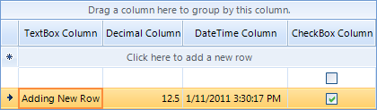

Adding and Inserting Rows
Adding rows to RadGridView
Adding new rows in the RadGridView can be achieved via the Rows collection.
For example if the grid control contains three columns –
GridViewTextBoxColumn,
GridViewDecimalColumn,
GridViewDateTimeColumn and
GridViewCheckBoxColumn
you can add an empty row as follows:
RadGridView.Rows.AddNew() adds an empty row and allows the user to enter a value for each column cells’
[C#]
radGridView1.Rows.AddNew();
[VB.NET]
RadGridView1.Rows.AddNew()

RadGridView.Rows.Add(value_for_first_column, value_for_second_column, value_for_third_column) – adds a new rows with the
specified values. You can use the following code snippet to add values for each column
[C#]
radGridView1.Rows.Add("Adding New Row", 12.5, DateTime.Now, true);
[VB.NET]
RadGridView1.Rows.Add("Adding New Row", 12.5, DateTime.Now, True)

You can also add rows by creating an instance of GridViewDataRowInfo and adding it to the Rows collection of RadGridView
[C#]
GridViewDataRowInfo rowInfo = new GridViewDataRowInfo(this.radGridView1.MasterView);
rowInfo.Cells[0].Value = "GridViewDataRowInfo";
rowInfo.Cells[1].Value = 11.4;
rowInfo.Cells[2].Value = DateTime.Now.AddDays(5);
rowInfo.Cells[3].Value = true;
radGridView1.Rows.Add(rowInfo);
[VB.NET]
Dim rowInfo As New GridViewDataRowInfo(Me.RadGridView1.MasterView)
rowInfo.Cells(0).Value = "GridViewDataRowInfo"
rowInfo.Cells(1).Value = 11.4
rowInfo.Cells(2).Value = DateTime.Now.AddDays(5)
rowInfo.Cells(3).Value = True
RadGridView1.Rows.Add(rowInfo)

Inserting rows in RadGridView
Rows can be inserted at a specified position by using the Insert method of the Rows collection of RadGridView.
Below you can see an example of this functionality:
[C#]
GridViewDataRowInfo dataRowInfo = new GridViewDataRowInfo(this.radGridView1.MasterView);
dataRowInfo.Cells[0].Value = "Inserted Row";
dataRowInfo.Cells[1].Value = 1156.54;
dataRowInfo.Cells[2].Value = DateTime.Now.AddDays(14);
radGridView1.Rows.Insert(2, dataRowInfo);
[VB.NET]
Dim dataRowInfo As New GridViewDataRowInfo(Me.RadGridView1.MasterView)
rowInfo.Cells(0).Value = "Inserted Row"
rowInfo.Cells(1).Value = 1154.54
rowInfo.Cells(2).Value = DateTime.Now.AddDays(14)
RadGridView1.Rows.Insert(2, dataRowInfo)